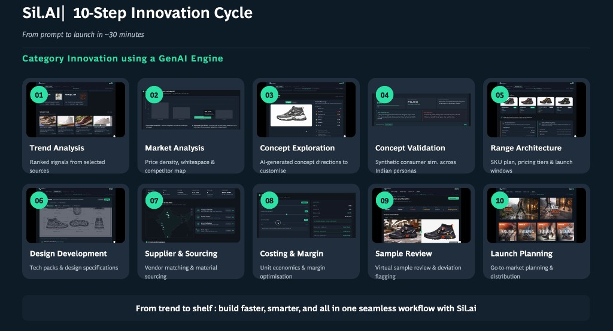

Overview
Relaxo, India's largest non-leather footwear manufacturer, had built iconic mass-market brands over decades. Yet despite its scale, the company faced increasing pressure from digitally native competitors and rapidly evolving consumer behavior.
Growth was slowing while peers accelerated through:
- Faster innovation cycles
- Stronger e-commerce presence
- Premiumization
- Consumer-led product development
- Digitally driven merchandising systems
How might a legacy footwear giant transform into an AI-enabled, consumer-demand-led innovation company?
My role
I worked on the AI-led innovation and product experience layer of the transformation.
My role included:
- Conceptualizing AI-powered innovation workflows
- Designing product innovation frameworks
- Building interaction flows for the GenAI-powered merchandising platform
- Designing AI-assisted footwear ideation systems
- Translating fashion and merchandising workflows into intuitive product experiences
- Creating innovation storytelling narratives and demo experiences
- Structuring consumer-demand-led innovation methodologies
- Designing product validation experiences using AI and behavioral data
Designing the AI-powered innovation engine
The platform reimagined the footwear innovation lifecycle into an AI-assisted workflow spanning:

Trend Signals → Insights → Concepts → Validation → Design → Manufacturing → Launch
The 15-stage AI product development journey
We structured the platform into a 15-stage AI-assisted workflow, covering the entire lifecycle. Click any card to reveal what the system does at that stage.
Key design insight
The biggest shift was moving from designing products to designing a system that designs products.
The platform acts as:
- A decision engine
- A creative accelerator
- A validation layer
- A collaboration system
Reflection
Designing with AI while building AI
This project was not just about designing an AI-powered product — it was also about using AI as a design and prototyping medium.
To rapidly explore and communicate the platform, I leveraged tools like:
- Figma Make
- Claude
- Other GenAI-assisted design workflows
These tools enabled me to:
- Prototype complex AI workflows faster
- Generate interface directions at speed
- Explore multiple concept variations in parallel
- Translate abstract system ideas into tangible product experiences